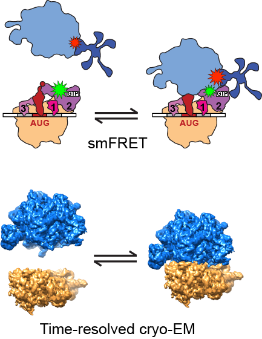
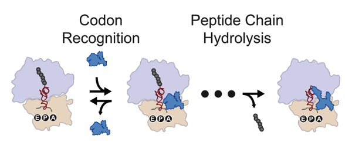
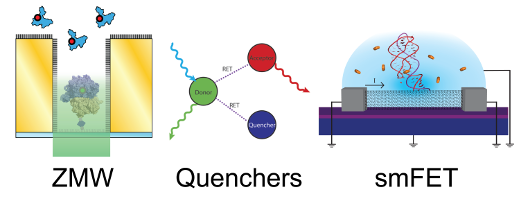

Research
Overview
Our group uses single-molecule biophysical approaches to investigate the molecular mechanism of one of Nature's most fundamental and conserved cellular processes: protein synthesis by the ribosome. The ribosome is the RNA-based molecular machine that is universally responsible for translating the nucleotide sequence provided by messenger RNAs into the amino acid sequence of the encoded protein products. As such, the ribosome plays a critical role in the mechanism and regulation of gene expression and is the target of numerous cellular protein factors that regulate protein synthesis, small-molecule antibiotic drugs that block protein synthesis, and human viral pathogens that commandeer the process of protein synthesis for their own purposes. Using single-molecule fluorescence microscopy and spectroscopy, we study the conformational dynamics of the ribosome, its aminoacyl-transfer RNA substrates, and its essential protein factors in real time, as they carry out the process of protein synthesis. By integrating the dynamic information that is uniquely available from the single-molecule resolution of our experiments into contemporary structural and biochemical models for protein synthesis, we gain insights into the molecular mechanism of protein synthesis and its regulation that are simply not accessible using traditional ensemble biophysical and biochemical approaches.
An important aspect of research in our group is the ongoing development of new experimental tools that empower single-molecule biophysical studies of complex biological processes such as protein synthesis. For example, we are applying microfluidic technologies to expand the experimental conditions under which we can perform single-molecule fluorescence experiments; optical imaging technologies to increase the information content of our experiments; nanotechnologies to establish entirely new, non-fluorescence based single-molecule detection schemes; and statistical inference approaches to develop algorithms for the statistically rigorous analysis of single-molecule dynamics data. As a result, research in our group is highly interdisciplinary, drawing from the fields of biophysical chemistry, biochemistry, computational biology, physics, and engineering to address complex biological problems that are not easily addressed through any one individual discipline.
Translation Initiation in Bacterial and Eukaryotic Organisms
Translation initiation is a rate-limiting and highly regulated step in protein synthesis. Deregulation of the translation initiation pathway has been causally linked to several human diseases. We use single-molecule FRET and time-resolved cryo-EM to study the conformational and compositional dynamics of ribosomal complexes and initiation factors (IFs) that are critical to the regulation of this pathway. Specifically, we are investigating the dynamics of the bacterial IFs, their role in regulating joining of the small and large ribosomal subunits, and the intermediate conformations of the ribosome that are sampled during this process. Building on our understanding of the bacterial system, we are assembling a yeast-based in vitro reconstituted system to investigate the dynamics underlying the more complex eukaryotic translation initiation pathway.
Mechanism and Regulation of Translation Elongation
Translation elongation is the step-wise addition of amino acids to a growing peptide as the ribosome travels down the messenger RNA, decoding the genetic information. During the peptide elongation cycle, multiple conformational dynamics within the ribosomal complex have been implicated in modulating critical gene regulatory events, such as programmed translational frame shifting, ribosomal stalling and post-peptidyl transfer quality-control. In the Elongation Subgroup, we use a combination of single-molecule FRET and biochemical assays to explore how the ribosome, in both prokaryotes and eukaryotes, coordinates and regulates such conformational dynamics. We are also interested in how the translational machinery incorporates unnatural amino acids, both to work towards the goal of ribosomal synthesis of designer proteins as well as to understand the role of ribosomal conformational dynamics in quality-control of peptide synthesis.
Mechanism and Fidelity of Translation Termination
Prokaryotic translation termination is a necessarily high fidelity process in which class I release factors recognize a trinucelotide mRNA stop codon, and subsequently catalyze the release of the nascent polypeptide chain from the ribosome. We utilize in vitro smFRET to probe the mechanistic origin of the fidelity of this release, and elucidate the apparent discrepancy between the observed, in vivo fidelity of translation termination and the thermodynamics of codon recognition.
Development of Single-Molecule Methods
A major focus of our research is aimed at the development of methods to move beyond the limitations of traditional TIRF-based smFRET. While smFRET allows an experimentalist to observe single molecule dynamics at much greater concentrations of fluorophore-labeled biomolecules in solution than colocalization experiments allow, the upper-limit of this concentration barrier is still below the level required to observe most weakly interacting, biological systems. Our efforts to experimentally access these biological systems have led us to design methods for nanofabricating robustly passivated nanoapertures called zero-mode waveguides (ZMWs) and to develop methods to implement quenchers as FRET acceptors in order to increase smFRET sensitivity and push beyond the concentration barrier.
Unfortunately, biologically relevant dynamics often occur on timescales faster than those accessible by smFRET with TIRF microscopy. In order to investigate these dynamics, we are developing carbon nanotube (CNT) single-molecule field-effect transistor (smFET) technology, where the improved temporal resolution afforded by these electronic devices can be used to observe the mechanistically important, transient intermediates involved in many biological systems.